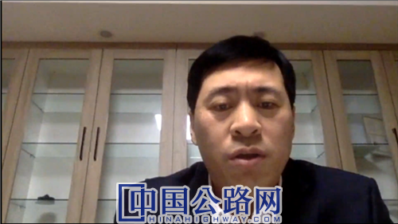
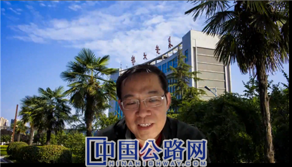

您好，欢迎来到中国高速公路网—21世纪公路网！
——2020年度中国公路学会青年专家委员会年会暨欧洲分委会成立大会顺利召开
 作者：《中国公路》记者 曹晶磊
来源：中国高速公路网—21世纪公路网
作者：《中国公路》记者 曹晶磊
来源：中国高速公路网—21世纪公路网
 时间：2020-12-23
时间：2020-12-23
2020年12月19日，中国公路学会青年专家委员会（简称“青专委”）2020年年会暨欧洲分委会成立大会以线上会议形式顺利举行。此次大会，不仅是一年一度的中国公路学会青年专家委员会年会，也是青专委在国内7个片区的基础上，成立欧洲分委会的成立大会。
青专委年会首次在线上举办
此次会议由中国公路学会主办，中国公路学会青年专家委员会、世界交通运输大会学部委员会承办，国内外百余位交通行业大咖和青年才俊齐聚云端，青专委秘书长、世界交通运输大会运行中心主任王大鹏主持了本次会议。
百余位交通行业青年才俊齐聚线上会议
中国公路学会青年专家委员会主任委员、中国交通建设股份有限公司副总裁裴岷山，世界交通运输大会学部委员会主席、长安大学校长沙爱民，中国驻荷兰大使馆教育参赞罗平出席会议并致辞；广东省交通运输厅总工程师黄成造，广东省航道事务中心党委书记朱永灵，港珠澳大桥管理局局长郑顺潮，中国公路学会副秘书长、第三届青年专家委员会秘书长巨荣云，中国公路学会副秘书长、第五届青年专家委员会副主任委员林声，青专委副主任委员、黑龙江省交通投资有限公司党委书记、董事长尚云龙，青年专家委员会副主任委员、中国交建西北区域总部、西北分公司副总经理袁卓亚，青年专家委员会副主任委员、广州交通大学（筹）教授、院长张劲文，荷兰国家应用科学院资深研究员、纬思拓科技首席科学家陈玉森，以及青专委7个片区的百余位委员、拟成立的欧洲分委会委员，关心和支持青专委和“星火计划”的行业青年才俊共同参加会议。

中国公路学会青年专家委员会主任委员、中国交通建设股份有限公司副总裁裴岷山致辞
中国公路学会青年专家委员会主任委员、中国交通建设股份有限公司副总裁裴岷山感慨，“新冠肺炎虽然改变了相约的地点，但是一年一度的相聚不会迟到。”2020年是不平凡的一年，裴岷山回顾了一年中青专委各项工作取得的成绩，并表达了对新一年的期许。他提到，作为青年交通人，要在牢牢坚持以推动高质量发展为主题，以深化供给侧结构性改革为主线的基础上，深入思考新形势下公路和交通建设的发展方向；要实现以国内大循环为主体，国内国际双循环相互促进的新发展格局，把握住改革创新支撑现代化建设的根本动力；青年交通人是“十四五”交通运输事业发展的参与者和实践者，要始终保持头脑冷静、科学研判和妥善应对的工作方法，牢牢抓住发展的机遇，为建设交通强国做出更大的贡献。
此外，会上宣读了增补同济大学王达磊等10位同志为中国公路学会青年专家委员会委员的通知。
王达磊在会上发表感言：“一系列的经历让我深刻的感受到青专委是一个充满友情和激情的强大的团体。未来在青专委的大家庭中，我将积极响应各项技术交流，积极充当青年专家智库；同时也希望与其他委员们一起，为交通强国和我国公共交通事业的高质量发展贡献自己的一份力量。”
青专委成立欧委会
青专委是汇聚人才、服务人才的科技组织。值得一提的是，此次会议，青专委在国内7个片区的基础上，吸引了海外学子，迎来了新的朋友和新的团队，由高星林、陈修涵、陈龙、周毅辉、彭添、刘琰、王猛、曹雯君、吕涛、吕秋晨、金若愚、张成玉、黄丽珍、潘为等14位分别在英国、西班牙、荷兰、挪威、德国等国家留学的青年才俊共同组成的欧洲分委会正式成立，他们的到来也将为祖国交通事业发展贡献积极的智慧和力量。
受线上会议的限制，为了让大家对欧洲分委会各位才华横溢的委员们有更加深入的认识和了解，青专委特别制作了视频短片，让参会人员在线上一睹欧洲各位青年才俊的风采。
欧洲分委会的成立，为中国公路学会青专委注入了新的力量。
2020年12月6日青专委欧委会召开第一次工作会议
“开放才能发展，合作才能共赢，欧洲分委会将是联系中国交通与世界交通、中国重大工程与世界重大工程的一个新的通道和桥梁，希望欧洲分委会可以充分发挥组织作用，促进委员会的沟通和交流，积极的吸引、团结和培育更多海外优秀的青年学者加入分委会，为中国交通事业和世界交通事业发展贡献智慧和力量。”裴岷山说。正是因为交通运输部的为培养交通强国战略人才的留学项目，中国驻荷兰大使馆和广东省交通运输厅、港珠澳大桥管理局对访学工作和星火计划的大力支持，才催生了欧委会成立，并在欧洲生了根，成长起来，未来也期待各有关单位继续提供大力支持。裴岷山强调说。

世界交通运输大会学部委员会主席、长安大学校长沙爱民致辞
受邀参会的世界交通运输大会学部委员会主席、长安大学校长沙爱民表示，青专委作为交通行业重要的科技力量，在未来交通的发展与进步中发挥重要的作用。他提到，交通方式的变革已不再局限于传统的迭代式的方式，交通行业的参与者也不再局限于传统的基础设施、载运装备、信息控制与运输管理，掌握信息网络、数据资源的新型产业在深刻改变着交通的发展和未来，欧洲分委会的成立，让青专委注入了国际力量，希望国内外委员可以着力去引导和推动行业和社会进步，并希望各位委员可以共同参与、组织、推动世界交通运输大会的建设与发展，共同为行业、国家乃至国际的交通行业的发展贡献力量。
中国驻荷兰大使馆教育参赞罗平致辞
“我国在荷兰访学活动中，涌现出的一批不忘留学初心，牢记报国使命的留学人员，充分证明了交通运输部和国家留学基金委联合为培养交通强国战略人才的留学项目是成功的。以高星林为突出代表，他们在新冠疫情的情势下，组织发起了“星火计划”国际学术交流系列活动，凝聚了一批学术界的专家学者，点燃了在交通领域国际学术交流的星星之火，从而催生了欧洲分委会的诞生。”中国驻荷兰大使馆教育参赞罗平对青专委欧洲分委会的成立表示祝贺，对成员表示肯定。他坦言，欧洲分委会的成立离不开我国出国留学事业的发展，是留学事业的衍生成果；并希望未来欧洲分委会的活动可以紧扣国内经济社会发展的主题，服务国家建设；表示自己会一如既往的全力支持青专委欧洲分委会活动的开展。
欧洲分委会负责人高星林代表欧洲分委会的全体委员感谢中国公路学会青专委的信任和支持，对推荐和选拔派出其访学的交通运输部、广东省交通运输厅、港珠澳大桥管理局等有关单位和对长期支持星火计划的中国驻荷兰大使馆等有关单位、专家、志愿者和团队成员等给予了充分感谢，汇报了欧委会2021年工作计划，并表示，欧洲分委会将在加强欧洲学者之间的沟通和交流的同时，加强与国内各个片区、各个分委会的交流和合作；努力开展围绕交通强国建设，促进理论和实践结合，促进国际交流合作，服务青年学者实现持续发展的活动；未来，欧洲分委会的活动也将和“星火计划”的活动共享，适当扩大领域范畴，促进跨界融合创新，完善管理机制，进一步为青专委和世界交通运输大会学术活动贡献力量。
学术报告围绕未来交通展开
本次年会的报告，以未来交通为主题展开。其中，张劲文以“面向未来交通”作报告。张劲文认为，交通会随着国家的兴衰而兴衰，国强而交通强，交通助推强国；评价一个国家是否成为交通强国主要体现在两个方面，一是国民的满意度；二是国际同行的评价。他说，未来交通是动态演化中、不可完全预测的；未来交通的目标是建设让人民满意，让生活更美好的交通，不仅是更快；未来交通要具备基础性、系统性、复杂性和跨界性的特性；满足人类需求、基础设施、运载工具、运行条件等基本要素。从认识论来看，未来交通是“交通-环境”符合系统，典型的开放复杂巨系统；从方法论来看，未来交通是“复杂性降解+适应性选择”的系统；从实践论来看，未来交通面临着主体能力不足的风险。
展望未来交通，张劲文认为未来取决于对世界的理解、行动前的价值取舍及行动实践，深度不确定之迭代决策，关键“路口”的迭代决策路径将勾勒未来；探索“开放复杂巨系统”的认识论-方法论-实践论，以简单性降低复杂性，以适应性应对复杂性；工程硬系统和环境软系统和谐共生，既要以工匠之心打造工程硬系统，又要以园丁之心提供适宜环境，培育环境软系统成长进程；构建科技创新与体制创新“双轮驱动”等。
荷兰国家应用科学院资深研究员、纬思拓科技首席科学家陈玉森以“智慧交通技术应用案例分析与新基建背景下的落地思考”作报告。陈玉森根据目前我国高速公路的交通现状，分析了新基建所面临的机遇与挑战。提出了交通控制如何与信息通讯结合、V2X通讯原理、交通V2X可以使用的技术等通讯技术。他指出，V2X通讯是指车与基础设施，车与车之间的通讯，将为自动驾驶、车路协同提供更多的可能型；未来，5G将使用V2X作为短程通讯与周围所有车辆的通信。
同时，陈玉森分享了欧洲地区车路协同技术的应用案例，包括荷兰A58智慧高速公路的车路/车车通讯及自动驾驶的项目、荷兰A270高速公路的车路协同及自动驾驶等。他强调，新技术不只是挑战，也是巨大的效用。“自动驾驶的基础设施支持水平”支持并指导道路运营及管理当局，规划及落实相应的基础设施建设，把未来的投资瞄准支持最高级別的自动驾驶，安排渐进式的技术支持过渡阶段的混合交通：从典型/传统设施,到最先进的设施；使用互联网及自动驾驶车辆将逐渐导致减少使用基础设施设备(VMS，点传感器)，从而减少费用。
会议还设置了互动交流环节，各位委员针对未来交通和智慧交通技术展开了热烈的提问和讨论，进行了思想上的碰撞。
会议由中国公路学会副秘书长巨荣云做总结，他首先肯定了青专委一年来的工作和努力，并表示青专委的发展离不开全体委员的支持，希望委员一如既往地关心和支持青专委的发展，让青专委真正成为青年科技工作者之家，希望每一位青专委委员可以不断的突破创新，取得丰硕的成果。巨荣云表示，中国公路学会就是青专委各位委员的家，学会将会继续支持大家的工作，为大家的技术创新提供条件。
【编辑：王珏 QQ：1485994861；TEL：13810405128/010-84990788—1369】
【审核：耿茁、孙婧】
 微信公众号
微信公众号
 微信订阅号
微信订阅号